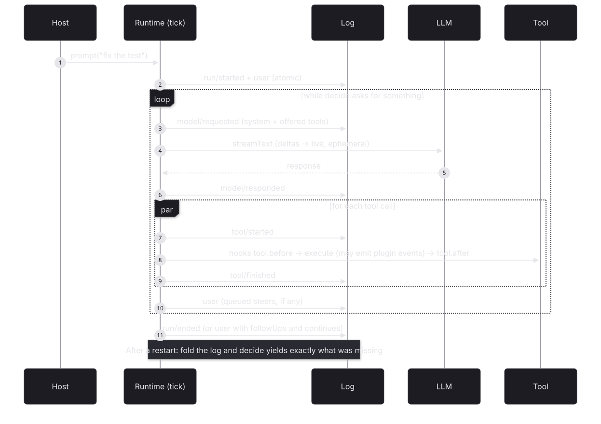
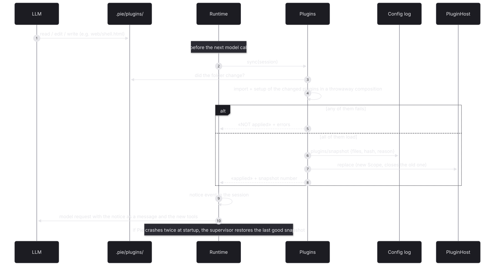

What is durable is always events (session log and configuration log); what is live is effects derived from them. If something can be a plugin, it is a plugin. Details in docs/EVENTS.md.

The agent is an Elm program: evolve(state, event) and decide(state, now) are pure. The runtime folds the branch, asks decide what is missing and executes it; the results come back to the log as events. Resuming after a restart is the same as any other tick.


model/requested stores the system prompt and the offered tools: what the model sees is in the log. Event ids are deterministic (run, turn, call), so repeating a step never duplicates anything.The SDK is fixed; each plugin is a folder in .pie/plugins/ that the agent edits with its normal tools; Pie applies the changes by itself before the next step (or tells the agent why not, with a notice event). Each applied change stores a full snapshot of the folder; going back to any of them is pie rollback (the agent runs it with bash; also from the web page, or the supervisor if Pie does not start).


| Table | What it stores |
|---|---|
| pie_events | The whole session, as a tree: core and plugin events |
| pie_sessions | cwd, initial model and leaf of the current branch |
| pie_config | Snapshots of the plugins folder and good-configuration marks |
| pie_cursors | How far each reaction has processed in each session |
| pie_workflow | Journal of the Effect workflows: executions, activities, deferreds, clocks, results |
| pie_lock | One runtime per database |
session.live. Plugin projections are not stored either: they are recomputed by folding the branch.

| Case | What happens | |
|---|---|---|
| SIGKILL with a model turn already answered | The model is not called again. | tested |
| SIGKILL during an idempotent tool | It is repeated. | tested |
| SIGKILL during a non-idempotent tool | It is not repeated: «outcome unknown». | tested |
| SIGKILL in the middle of the model stream | model/requested without a response: the call is repeated. | implemented |
| Provider failure | model/failed with a retry time; 3 attempts with backoff; then failed. | tested |
| prompt with an active run / steer / followUp | SessionBusy; steer after the tools; followUp at the end, in the same run. | tested |
| abort during a tool | The tool is cut off, the run ends aborted, the session is free. | tested |
| Tool ids repeated across turns | Event ids include the turn. | tested |
| Parallel plugin tools that read state | Events record facts; ids and counters are derived by the projection. | tested |
| Forking (navigate) with plugin state | The projection is that of the branch. | tested |
| Broken plugin, or one that uses a policy point | Refused at validation; nothing changes. | tested |
| Installing a plugin in the middle of a run | It is applied before the next step and its tool appears in that call; if it does not load, the agent receives the errors. | tested |
| Effect workflow with SIGKILL | Completed activities are not repeated; the clock keeps its time; the approval resumes it; the result is stored. | tested |
| Two processes on the same database | Lock with a 3 s expiry; the second one waits up to 10 s and fails. | implemented |
| New reaction on existing sessions | It starts from now, not from the history. | implemented |
| Very long sessions | Projections fold the whole branch on every read; snapshots will be needed. | pending |
| Forking a session with running workflows | The workflow journal is not part of the session tree. | risk |
| Changing core event types or payloads | They are the durable contract: compatible changes only. | risk |
import { Pie, Plugin, Storage, TodoPlugin, defineTool } from "pie-agent" const PieLive = Pie.layer({ storage: Storage.sqlite("pie.db"), // or Storage.memory plugins: [...Pie.builtins, TodoPlugin], // opencode-go, system-prompt, context-files, coding-tools reload: "hot" // or "restart" with Supervisor.run + Pie.exitOnRestart }) const program = Effect.gen(function*() { const pie = yield* Pie.Pie const session = yield* pie.create({ cwd: "/repo", model: "opencode-go/deepseek-v4.1-flash" }) yield* session.live.pipe(Stream.runForEach(onEvent), Effect.forkScoped) // events + deltas yield* session.prompt("fix the test") const outcome = yield* session.awaitIdle // run/ended: completed | failed | aborted const events = yield* session.events // the current branch: the whole truth yield* session.navigate(events[1].id) // fork from there }) // A plugin with state: extend + derive + tool that emits + view export default Plugin.define({ id: "notes", setup: (ctx) => Effect.gen(function*() { yield* ctx.events({ added: Schema.Struct({ text: Schema.String }) }) const notes = yield* ctx.projection({ id: "notes", initial: () => [], on: { "notes/added": (s, e) => [...s, e.text] } }) yield* ctx.tools.transform((t) => t.set("note_add", defineTool({ ..., execute: ({ text }, tool) => Effect.as(Effect.orDie(tool.emit("notes/added", { text })), { content: "saved" }) }))) yield* ctx.hook("context", (e) => Effect.map(notes.get(e.sessionId), (n) => void e.system.push({ key: "notes", text: n.join("\n") }))) yield* ctx.react({ id: "audit", on: ["tool/finished"], run: (event, r) => ... }) }) })